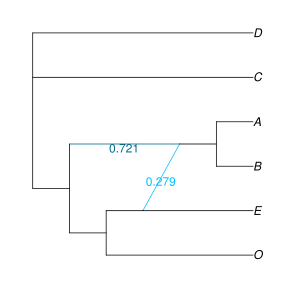
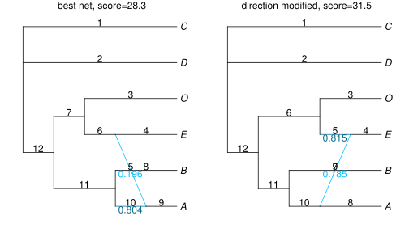
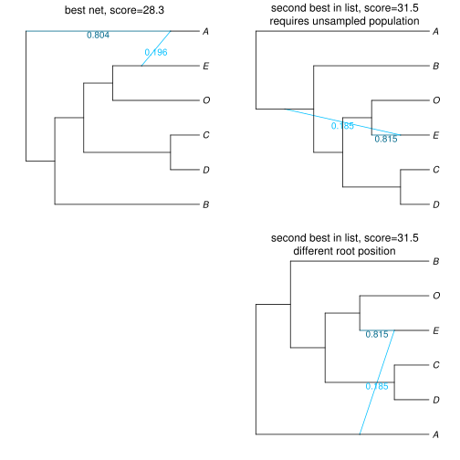

Candidate Networks
Optimizing parameters for a given network
For a given network topology, we can optimize the branch lengths and inheritance probabilities (γ) with the pseudolikelihood. This is useful if we have a few candidate networks to compare. Each network can be optimized individually, and the network with the best pseudolikelihood can be chosen.
The score being optimized is the pseudo-deviance, i.e. the negative log pseudo-likelihood up to an additive constant (the lower the better).
Following our example in Getting a Network, we can optimize parameters on the true network (the one originally used to simulate the data):
julia> truenet = readTopology("((((D:0.4,C:0.4):4.8,((A:0.8,B:0.8):2.2)#H1:2.2::0.7):4.0,(#H1:0::0.3,E:3.0):6.2):2.0,O:11.2);"); julia> net1alt = topologyMaxQPseudolik!(truenet, raxmlCF); julia> writeTopology(net1alt, round=true) "(D,C,(((A,B):0.987)#H1:8.376::0.721,((#H1:0.0::0.279,E):1.287,O):1.181):7.615);" julia> net1alt.loglik # pseudo deviance, actually 29.94130186108919
using PhyloPlots, RCall R"name <- function(x) file.path('..', 'assets', 'figures', x)" R"svg(name('truenet_opt.svg'), width=4, height=4)" R"par(mar = c(0, 0, 0, 0))" plot(net1alt, :R, showGamma=true); R"dev.off()"

We get a score of 29.941, which is comparable to the score of the SNaQ network (net1: 28.315), especially compared to the score of the best tree (net0: 53.532). This begs the question: is the true network within the "range" of uncertainty? We can run a Bootstrap analysis to measure uncertainty in our network inference.
For a more thorough optimization, we may increase the requirements before the search stops (but the optimization will take longer). It makes no difference on this small data set.
net1par = topologyMaxQPseudolik!(truenet, raxmlCF, ftolRel=1e-10, xtolAbs=1e-10) net1par.loglik
Network Score with no optimization
For a network with given branch lengths and γ heritabilies, we can compute the pseudolikelihood with:
julia> topologyQPseudolik!(truenet,raxmlCF); julia> truenet.loglik 153.5310295393005
This function is not maximizing the pseudolikelihood, it is simply computing the pseudolikelihood (or deviance) for the given branch lengths and probabilities of inheritance. At the moment, both of these functions require that the given network is of level 1 (cycles don't overlap).
Candidate networks compatible with a known outgroup
If the network was estimated via snaq!, it might turn out to be impossible to root our estimated network with a known outgroup (see section What if the root conflicts with the direction of a reticulation?.) At this time, snaq! does not impose any rooting constraint on the network: the search for the lowest score considers all level-1 networks, including those that are incompatible with a known outgroup. (The monophyly of outgroups is not imposed either, like in many other methods.)
If the estimated network cannot be rooted with the known outgroup, we can check the .networks output file. It has a list of networks that are slight modifications of the best network, where the modifications changed the direction of one reticulation at a time. For each modified network, the score was calculated. So if we find in this list a modified network that has a score close to that of the best network, and that can be re-rooted with our known root position, then this modified network is a better candidate than the network with the best score.
Below is what the net1.networks file looks like, after performing the analysis in the section Network Estimation. Scroll to the right to see the scores.
(C,D,((O,(E,#H7:::0.19558838614943078):0.31352437658618976):0.6640664399202987,(B,(A)#H7:::0.8044116138505693):10.0):10.0);, with -loglik 28.31506721890958 (best network found, remaining sorted by log-pseudolik; the smaller, the better) (C,D,((O,(E)#H7:::0.8150784689693145):0.9336405757682176,(B,(A,#H7:::0.18492153103068557):0.25386142779877724):1.8758156446611114):10.0);, with -loglik 31.535560380783814 (B,#H7:9.90999345612101::0.2555404440833535,(A,(E,(O,((C,D):10.0)#H7:0.3419231810962026::0.7444595559166465):0.19994859441332047):2.5014911511063644):0.7957621793330066);, with -loglik 56.64548310161462 (C,D,((O,(E,((B)#H7:::0.7957543284159452,A):4.786202415937916):0.004527712280136759):1.7952610454570868,#H7:::0.20424567158405482):10.0);, with -loglik 67.17775727492258 (C,D,(#H7:::0.32947301811471164,(B,(A,(E,(O)#H7:::0.6705269818852884):1.371799259141243):0.0):6.397073999864152):7.677245926003807);, with -loglik 199.11401961057143
We can read this file and look at its list of networks like this:
julia> file = "net1.networks"; julia> # or use the example file available with the package: file = joinpath(Pkg.dir("PhyloNetworks"),"examples","net1.networks"); julia> netlist = readMultiTopology(file) # read the full list of networks in that file 5-element Array{PhyloNetworks.HybridNetwork,1}: PhyloNetworks.HybridNetwork, Rooted Network 12 edges 12 nodes: 6 tips, 1 hybrid nodes, 5 internal tree nodes. tip labels: C, D, O, E, ... (C,D,((O,(E,#H7:::0.196):0.314):0.664,(B,(A)#H7:::0.804):10.0):10.0); PhyloNetworks.HybridNetwork, Rooted Network 12 edges 12 nodes: 6 tips, 1 hybrid nodes, 5 internal tree nodes. tip labels: C, D, O, E, ... (C,D,((O,(E)#H7:::0.815):0.934,(B,(A,#H7:::0.185):0.254):1.876):10.0); PhyloNetworks.HybridNetwork, Rooted Network 12 edges 12 nodes: 6 tips, 1 hybrid nodes, 5 internal tree nodes. tip labels: B, A, E, O, ... (B,#H7:9.91::0.256,(A,(E,(O,((C,D):10.0)#H7:0.342::0.744):0.2):2.501):0.796); PhyloNetworks.HybridNetwork, Rooted Network 12 edges 12 nodes: 6 tips, 1 hybrid nodes, 5 internal tree nodes. tip labels: C, D, O, E, ... (C,D,((O,(E,((B)#H7:::0.796,A):4.786):0.005):1.795,#H7:::0.204):10.0); PhyloNetworks.HybridNetwork, Rooted Network 12 edges 12 nodes: 6 tips, 1 hybrid nodes, 5 internal tree nodes. tip labels: C, D, B, A, ... (C,D,(#H7:::0.329,(B,(A,(E,(O)#H7:::0.671):1.372):0.0):6.397):7.677);
Next, we would like to extract the network scores from the file. Below is a one-liner to do this (we make Julia send a sed command to the shell –sorry, Mac or Linux for this.)
julia> scoresInString = readstring(`sed -E 's/.+with -loglik ([0-9]+.[0-9]+).+/\1/' $file`)
"28.31506721890958\n31.53556038078381\n56.6454831016146\n67.1777572749225\n199.1140196105714\n"
julia> scores = parse.(Float64, split(scoresInString))
5-element Array{Float64,1}:
28.3151
31.5356
56.6455
67.1778
199.114
julia> # next: update the "loglik" of each network with the score read from the file
for i in eachindex(netlist)
netlist[i].loglik = scores[i]
println("net $i in the list: score = ",scores[i])
end
net 1 in the list: score = 28.31506721890958
net 2 in the list: score = 31.53556038078381
net 3 in the list: score = 56.6454831016146
net 4 in the list: score = 67.1777572749225
net 5 in the list: score = 199.1140196105714
The first network in the list is the best network returned by snaq!. We see that the second network has a score that's not too far, but the other networks have worse scores. The best network and its best modification (second network in the list) are shown below. We chose to show edge numbers, to use them later to re-root the networks.
plot(netlist[1], :R, showGamma=true, showEdgeNumber=true, tipOffset=0.1); R"mtext('best net, score=28.3', line=-1)" plot(netlist[2], :R, showGamma=true, showEdgeNumber=true, tipOffset=0.1); R"mtext('direction modified, score=31.5', line=-1)";

Now imagine that our outgroup is taxon A.
- best network: we would get a "RootMismatch" error if we tried to set the root on the external edge 9 to A, with
rootatnode!(netlist[1], "A")(see section What if the root conflicts with the direction of a reticulation?). But we could root the best network on the major parent edge to A, edge 10 (rooted network on the left below). - For the second best network in our list, there are 2 ways to root it with A: on the external edge 8 to A (top right), or on its parent edge 10 (bottom right). These 2 options give quite different rooted versions of the network, one of which requires the existence of an unsampled taxon, sister to BOECD, that would have contributed to introgression into an ancestor of E. The second rooted version says that an ancestor of (or sister to) A contributed to the introgression into the ancestor of E. A is an outgroup in both cases, but the second case is more parsimonious, in the sense that it does not require the existence of an unsampled taxon.
rootonedge!(netlist[1], 10); # root best net to make A outgroup rotate!(netlist[1], -4); # to 'un-cross' edges rotate!(netlist[1], -6); plot(netlist[1], :R, showGamma=true, tipOffset=0.1); R"mtext('best net, score=28.3', line=-1)"; rootatnode!(netlist[2], "A"); # net with modified direction: first way to make A outgroup plot(netlist[2], :R, showGamma=true, tipOffset=0.1); R"mtext('second best in list, score=31.5\nrequires unsampled population', line=-2)"; rootonedge!(netlist[2], 10) # net with modified direction: second way to make A outgroup plot(netlist[2], :R, showGamma=true, tipOffset=0.1); R"mtext('second best in list, score=31.5\ndifferent root position', line=-2)";
